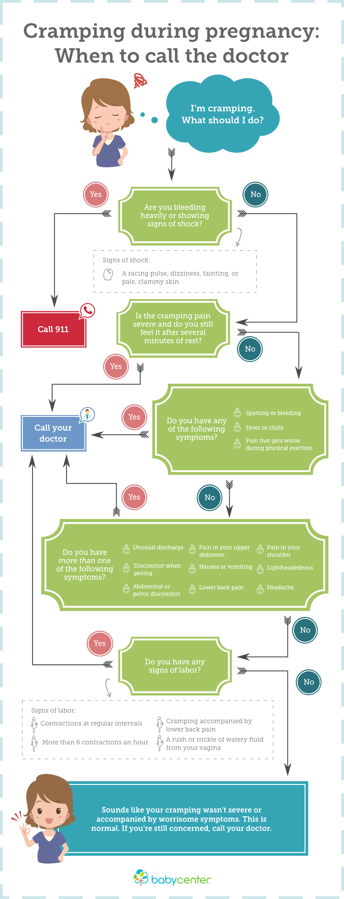
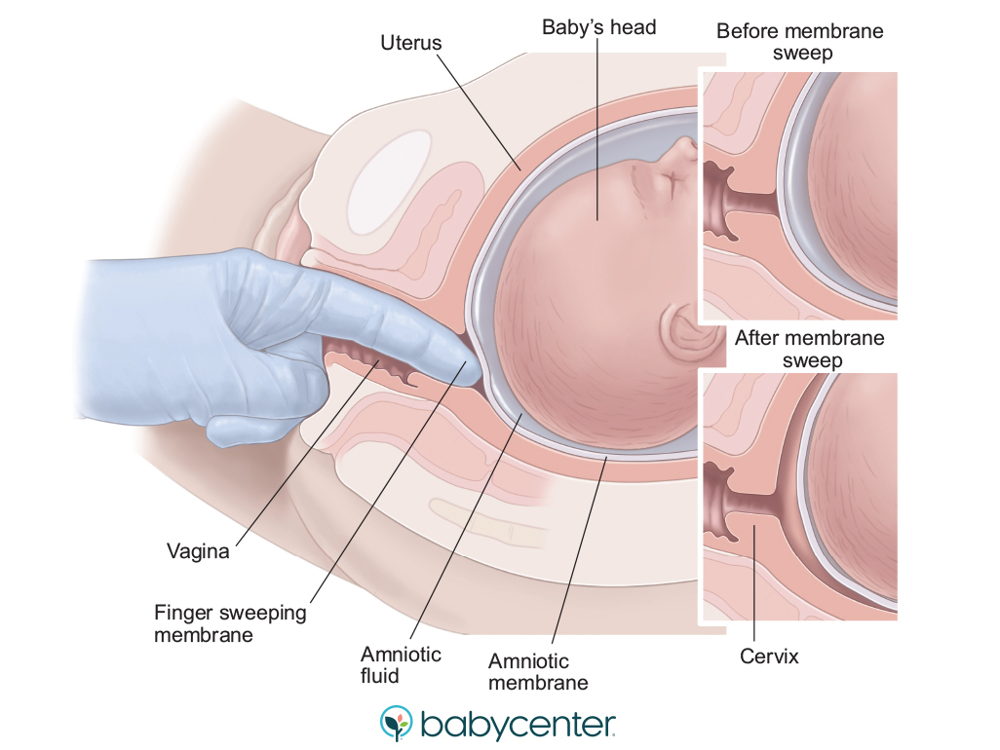

Your Body
Early pregnancy symptoms like nausea, breast tenderness, and fatigue may have been your first signs of pregnancy. For some women, pregnancy symptoms start even before a missed period – though they're more likely to surface later. Your body changes so much during pregnancy, inside and out: Find out what to expect from conception until labor and delivery, see the best pregnancy sleeping positions, and learn which pregnancy symptoms warrant a call to your healthcare provider.
Symptoms
.jpg)
Why your pregnant belly feels tight and heavy
it's usually because your uterus is expanding to accommodate your growing baby.
-
* How does a pregnant belly feel in early pregnancy?
In early pregnancy, a pregnant belly may feel soft, slightly bloated, and may have a sense of tightness due to digestive changes. Visible changes, like a larger belly, usually become noticeable later in the first trimester or early in the second trimester.
-
* When does your belly start feeling hard during pregnancy?
In pregnancy, the belly usually starts feeling firm in the second or third trimester as the uterus grows and presses against the abdomen. This firmness can be accompanied by mild cramping. Factors like height and body size can affect how and when the belly becomes hard. Gas can also contribute to belly hardness due to hormonal changes. Managing gas through exercise, diet, and medications can help alleviate discomfort.
-
* My pregnant belly feels tight and heavy – what gives?
In pregnancy, stomach tightness is normal, especially towards the end when the belly feels heavy and tight like a watermelon. This is due to the baby's growth and uterus expansion, causing stretched skin and itchiness. Pressure on internal organs may lead to breathing difficulties and more bathroom trips. Stomach tightening may be Braxton Hicks contractions, while sharp pains could be round ligament pain. Severe cramping or pain may signal complications like preterm labor or placental issues.
Frequently asked questions:
-
Is it normal to feel stomach tightening during pregnancy?
Yes, feeling stomach tightening during pregnancy is very normal. It happens as your body changes to accommodate your growing baby, and as your body prepares for labor.
-
What causes stomach tightening during pregnancy?
Stomach tightening during pregnancy can be caused by your expanding uterus, Braxton Hicks contractions, or labor contractions towards the end of pregnancy.
-
Why does my stomach feel tight in late pregnancy?
Your growing belly and baby often cause a sensation of stomach tightening late in pregnancy. At this point, your uterus is crowding your internal organs and pushing up against your abdominal wall. If the tightening sensation isn't painful, but comes and goes, you may be having Braxton Hicks contractions. If you're feeling regular, painful stomach tightening late in pregnancy, it could be labor
-
Can your stomach tighten without contractions?
Yes. You may feel like your stomach is tightening as your uterus takes up more space, pushes against your abdomen, and stretches the skin on your belly. You can also feel stomach tightening from Braxton Hicks, which aren't true labor contractions.
Spotting during pregnancy
Spotting during pregnancy, especially in the first trimester, is common and often not serious.
-
* Is it normal to have spotting during pregnancy?
Light bleeding or spotting during pregnancy, common in early pregnancy, should prompt you to inform your doctor, even if it stops. While often minor, it can indicate serious issues like ectopic pregnancy or miscarriage. Medical tests may be needed. If bleeding is severe or accompanied by intense pain and you cannot reach your doctor, seek immediate medical attention.
-
* What's the difference between spotting and bleeding during pregnancy?
Spotting during pregnancy is very light bleeding, similar to the beginning or end of a period, with small drops of blood on underwear, ranging from pink to red to brown. It's common in the first three months and may require wearing a panty liner or pad. Heavy bleeding can signal a problem and should be reported to your doctor promptly.
-
* Early pregnancy bleeding: What causes it?
Causes of light spotting or bleeding in early pregnancy include implantation bleeding, subchorionic hematoma, miscarriage, ectopic pregnancy, molar pregnancy, and infections such as chlamydia, gonorrhea, herpes, yeast infection, and trichomoniasis. Spotting after sex or a pelvic exam can also occur due to increased blood flow to the cervix or cervical polyps. Prompt medical attention is needed if bleeding is accompanied by abdominal pain or other concerning symptoms.
Frequently asked questions:
-
What causes second or third trimester bleeding?
Light bleeding later in pregnancy may be due to harmless causes like inflammation or cervical polyps. "Show," bloody discharge before delivery, signals the cervix preparing for labor. However, heavy bleeding warrants immediate medical attention and could indicate placental problems, late miscarriage, or preterm labor, characterized by symptoms like abdominal pain, contractions, and pelvic pressure.
-
How much bleeding during pregnancy is normal?
Light bleeding in pregnancy, especially during implantation, is common. However, bleeding can occur at any stage for various reasons. Inform your provider about any bleeding, as some causes can be serious. Heavier or persistent bleeding requires immediate medical attention to safeguard both your health and your baby's.
-
When should I call my doctor about spotting or bleeding during pregnancy?
Any bleeding in pregnancy should prompt a call to your doctor, especially if it's heavy or persistent. Provide details about the bleeding and any accompanying symptoms. RH-negative individuals experiencing bleeding should seek a Rhogam shot.
Cramping during pregnancy
Cramps during pregnancy are often nothing to worry about. But if the pain is severe or you have other symptoms, cramping may signal a problem..
-
* Are cramps during pregnancy normal?
Occasional mild cramps in pregnancy are normal, but severe or persistent cramps with other symptoms may signal a problem. Early pregnancy cramping and bleeding could indicate complications like infection, ectopic pregnancy, or miscarriage. Later in pregnancy, cramps might be harmless or indicate preterm labor or placental issues. Contact your healthcare provider if cramping persists, is severe, or is accompanied by other concerning symptoms.
-
* Miscarriage
Miscarriage, the loss of a pregnancy within the first 20 weeks, presents symptoms like vaginal bleeding, abdominal cramps, and passing tissue from the vagina. Contact your provider immediately if you have signs of miscarriage, particularly severe pain or heavy bleeding.
-
*Cramping in the second and third trimester
1. Normal Causes: Expanding uterus, round ligament pain, and Braxton Hicks contractions.
2. Serious Causes: Placental abruption, preterm labor, and urinary tract infections.
3. Other Conditions: Ectopic pregnancy, gallstones, and preeclampsia.
4. Consult Your Doctor: If you're concerned about symptoms, seek medical advice.
5. Stay Informed: Be aware of warning signs during pregnancy. 😊🤰🏻
Frequently asked questions:
-
Is there anything I can do to relieve cramps during pregnancy?
1. Move Around: Gentle exercises can help with gas pain and constipation.
2. Warm Bath or Shower: Soothe discomfort.
3. Bend Toward Pain: Find relief.
4. Stay Hydrated: Drink plenty of fluids.
5. Lie Down: May alleviate Braxton Hicks contraction pain.
-
When to call the doctor for cramps during pregnancy?

Labor& Delivery
Cervical dilation and effacementy
Learn about the stages of dilation and effacement, what they mean for your labor and delivery, and common symptoms at each phase
-
* What is dilation?
Dilation is the gradual opening of the cervix during labor to allow the baby to pass through the birth canal. It begins before labor starts and progresses from fully closed to 10 centimeters. Active labor typically starts around 6 centimeters dilation and lasts until full dilation, which usually takes hours.
-
* What is effacement?
* Definition: Effacement involves the cervix shortening and becoming thinner.
* Progression: It ranges from 0% (not effaced) to 100% (fully effaced).
*Timing: Effacement can take weeks, days, or hours.
*Labor Transition: Once fully effaced and dilated to 10 centimeters, labor enters the pushing stage.
effacement is an essential part of the birthing process! -
*When will my cervix start to dilate and efface?
Cervical dilation and effacement vary for each individual, especially in first pregnancies. Effacement may occur before dilation, or both processes may happen gradually over days or weeks. Healthcare providers monitor cervix progress during labor using their fingers. However, even with some dilation and effacement, labor may not start immediately. Signs of labor, besides cervical changes, indicate when it's time to go to the hospital or birth center.
Recognizing the signs of labor
Early signs of labor can start days or even weeks before the big event.
-
* What is labor?
Labor is the process of delivering your baby and placenta from your uterus through your vagina. It typically occurs between 38 and 41 weeks of pregnancy. It involves three stages: cervical dilation and effacement, descent and birth of the baby, and delivery of the placenta.
-
*Early signs of labor
In the days or weeks leading up to labor, you may notice signs indicating its approach. These include "lightening" where your baby drops lower into your pelvis, loss of the mucus plug, or a "bloody show" of discharge tinged with blood. Changes in cervical dilation and effacement can also occur, along with more frequent Braxton Hicks contractions. Some women experience a nesting instinct, while others may have diarrhea or nausea. However, these signs can vary greatly among individuals and may not always indicate immediate labor.
-
* Signs of labor
Signs of labor include regular contractions that become increasingly stronger and more frequent, along with back pain or pelvic pressure. Another sign is the rupture of membranes, commonly known as your water breaking, which may occur before contractions start. Preterm labor, before 37 weeks, can also exhibit similar symptoms, such as increased vaginal discharge, bleeding, abdominal pain, or contractions. If you experience any of these signs, especially before 37 weeks, contact your doctor or midwife immediately for further evaluation.
Membrane sweep: One way to get your labor started
Membrane stripping is a procedure done to help induce labor if you're full term and your cervix is already somewhat dilated.
-
*What is a membrane sweep?
A membrane sweep, or stripping, is a procedure done in the doctor's office where the practitioner manually separates the amniotic sac from the lower part of the uterus by sweeping a finger through the cervix. This can release prostaglandins, which may help ripen the cervix and induce contractions. 
-
* When would I need a membrane sweep?
Membrane stripping may be recommended if you're nearing or past your due date to help kickstart labor. Prolonged pregnancies beyond 41 or 42 weeks can pose risks to both you and your baby, such as decreased placental function, potentially leading to complications like stillbirth. If there are concerns about you or your baby's well-being, your practitioner may suggest interventions like a C-section or expedited induction.
-
*Are membrane sweeps safe?
Yes, membrane stripping is safe when it's done at full term (39 to 41 weeks). Researchers have found that women who have a membrane sweep aren’t more likely than other women to end up having a C-section or other complications.
-
*What should I expect after a membrane sweep?
After the membrane sweep, you typically go home and wait for labor to start, usually within the next couple days. You may have some spotting and cramping during this time. However, if you’re having a lot of bleeding or pain, call your practitioner or go to the hospital.
Early Signs of Pregnancy
When will my pregnancy start to show?
If it's your first pregnancy, or even if it isn't,you will know the answer
-
* When do you start showing in pregnancy?
*when you start showing during pregnancy can vary* based on individual factors. Here are the key points:
1-Timing: Most women typically start showing between *late in the first trimester and midway into the second trimester*, which is around **12 to 20 weeks**[1] [3] [4].
2-Factors Influencing Showing:
- *First Pregnancy: If it's your first pregnancy, you'll likely notice the first signs of a bump early in the *second trimester*, between *weeks 12 and 16*.
- *Second Pregnancy: If you've been pregnant before, you might develop a baby bump in the *first trimester* after your first pregnancy.
- *Twins or More: Expecting twins or more? You might start showing even before the end of your *first trimester*.
- *Abdominal Bloating: Sometimes what you think is a baby bump could be due to abdominal bloating caused by hormonal changes.
Remember, every pregnancy is unique, so consult with your doctor if you have any concerns about your pregnancy timeline[1]. 😊 -
* Should I be worried if I haven't started showing yet?
Not showing in the second trimester is normal and doesn't necessarily mean your baby is too small. Your healthcare provider will monitor your baby's growth through fundal height measurements and ultrasounds if needed. Smaller-than-expected babies receive extra monitoring to ensure their well-being.
Pregnancy Due Date
-
* How is my due date calculated?
There are several methods to determine your due date:
1-First day of your last period: Counting 40 weeks from the first day of your last menstrual period (LMP), which is the most common method.
2-Conception date: If you know precisely when you conceived, you can calculate your due date based on that date.
3-IVF transfer date: For pregnancies conceived through IVF, the due date can be calculated from the embryo transfer date.
4-Ultrasound scan: Early ultrasounds can help determine the due date more accurately than other methods, especially if the LMP is uncertain or if there are risk factors.
Each method has its advantages and limitations, and healthcare providers may use different approaches based on individual circumstances. -
*Can my due date change?
Your healthcare provider may adjust your due date based on measurements from a first-trimester ultrasound if your baby's size doesn't align with the expected gestational age. This is especially common if you have irregular menstrual cycles, making conception date uncertain. They'll measure your baby during the ultrasound to determine a more accurate due date.
- * How likely am I to give birth on my due date?
Due date calculations are approximate. Only 1 in 20 women deliver on their due date. Labor can happen any day within two weeks before or after the due date. For more on pregnancy timing, check out our pregnancy timing chart. - * How likely am I to give birth on my due date?
Sleep
What's the best sleeping position during pregnancy?
Are you a back, tummy, or side sleeper? Find out whether your preferred sleeping position is safe during pregnancy
-
*I'm not a side sleeper. How can I make the switch to sleeping on my side?
If you're used to sleeping on your back or tummy, you might try to make the transition to your side early in your pregnancy, while sleeping in general isn't uncomfortable. As you get bigger, you can:
Use pillows under your belly, between your legs, and behind your back.
Lean back against a pillow while on your side
Lie in a half-sitting position, propped up against some pillows, which can be helpful if you suffer from heartburn. -
* Is one side better than the other for sleeping during pregnancy?
Some caregivers will suggest that you sleep on your left side in particular, because it's thought that blood flow is better to the heart, uterus, kidney, and baby when you're on your left side. Sleeping on your left side also keeps pressure off your big vein (inferior vena cava), which brings blood from your legs back up to your heart and keeps your circulation going. But there's no scientific evidence that the left is better than the right. So feel free to shift from side to side.
-
* Is it safe to sleep on my back during pregnancy?
It's safe to sleep on your back during the first trimester, but as your uterus grows heavier, it's best to avoid this position. Back sleeping can compress the inferior vena cava, affecting blood flow to the placenta and causing discomfort for you, like dizziness or shortness of breath. Switching to your side is recommended to prevent such issues and discomfort. If you accidentally wake up on your back, just change position and go back to sleep.
-
* Is it safe to sleep on my stomach during pregnancy?
Yes. Tender breasts and a growing belly may soon make sleeping on your stomach uncomfortable, but you can sleep face down for as long as it suits you. If you're used to sleeping on your stomach and want to continue, try using a donut-shaped pillow to support your growing belly. Some women find this allows them to sleep comfortably on their stomach.
-
* How to sleep when pregnant
Pregnancy symptoms like frequent urination, nausea, heartburn, and restless legs can make sleep challenging. Strategies include reducing caffeine, adjusting fluid intake, having a light snack before bed, and using relaxation techniques. Establishing a bedtime routine and maintaining a consistent sleep schedule can also help. If sleep troubles persist, consult your provider about safe sleep medications during pregnancy.
Waking up hungry: How to handle pregnancy hunger pains
Appetite changes are par for the course in pregnancy, thanks to hormones and increased metabolism.
-
* Why am I waking up hungry during pregnancy?
Pregnancy hunger is real, and hormonal changes can cause fluctuating signals of hunger and fullness, leading to nighttime hunger. Your metabolism increases during pregnancy to support your baby's growth, requiring extra calories. In the second trimester, aim for about 340 extra calories per day, and in the third trimester, around 450 extra calories per day. Choose nutrient-dense, filling foods to satisfy hunger without excessive weight gain.
-
* How to deal with late-night pregnancy hunger pains
To curb nighttime hunger during pregnancy:
1-Don't go to bed hungry: Add fiber-rich foods like fruits, vegetables, and whole grains to your dinner to stay full longer and prevent constipation.
2-Snack smartly: Keep healthy options like hard-boiled eggs, fresh fruits, and cottage cheese in your fridge for midnight snacks to satisfy hunger without succumbing to junk food cravings.
3-Limit processed foods: Opt for whole-grain options and fresh fruits over processed counterparts to avoid disrupting hunger-suppressing hormones.
4-Stay hydrated-: Drink plenty of water throughout the day to stay full and support your body's increased needs during pregnancy, but try to limit intake closer to bedtime to minimize bathroom trips.
5-Avoid heartburn triggers: Steer clear of fried, fatty, citrus, peppermint, and soda before bed to prevent nighttime heartburn or indigestion, which can disrupt sleep.Morning sickness at night
Despite what it's called, "morning" sickness doesn’t happen only before noon.
-
*What causes morning sickness at night?
Nausea and vomiting during pregnancy, commonly known as morning sickness, can occur at any time of the day, not just in the morning. It typically peaks around nine weeks gestation. The exact cause is uncertain but may involve rapidly rising hormone levels, increased sensitivity to smells, a sensitive gastrointestinal tract, and genetic factors.
-
* How long does pregnancy nausea at night last?
Most women experience relief from pregnancy-related nausea, including morning sickness at night, by about 14 to 20 weeks of pregnancy. Some may continue to feel queasy throughout pregnancy. Discuss symptoms with your healthcare provider for evaluation and possible relief options, including safe medications. They'll assess for dehydration, appropriate weight gain, and rule out severe conditions like hyperemesis gravidarum.
- * Remedies for morning sickness at night
-
*What causes morning sickness at night?